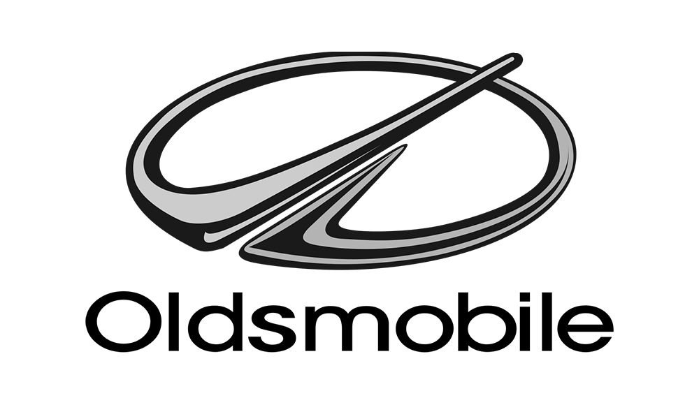
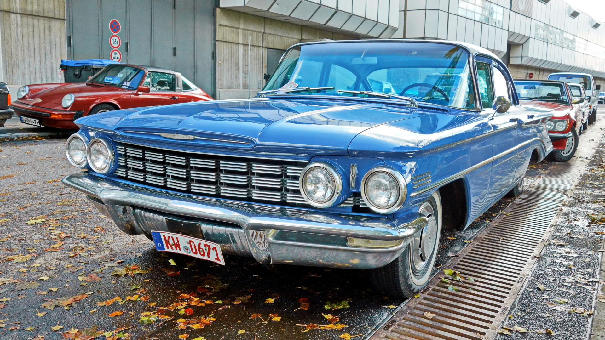
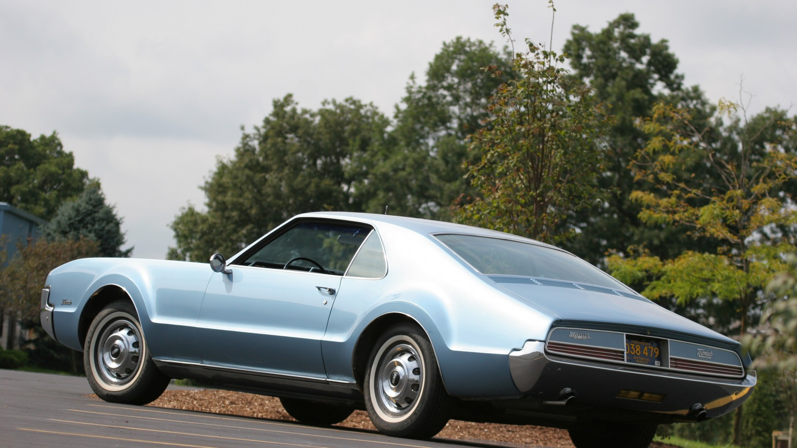
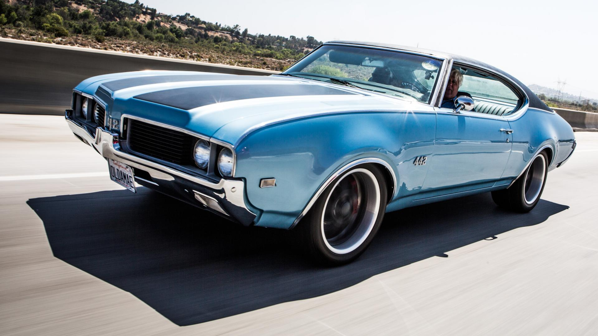
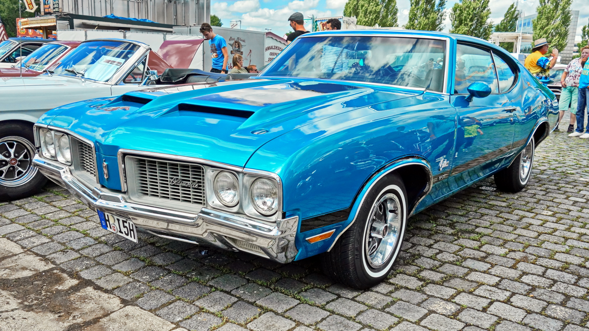

Oldsmobile
Bakgrunn
Oldsmobile er kanskje ikkje det mest kjende merket frå Amerika, men dei byrja ein viktig periode. Deiras Dynamic blir sett på som den første muskelbilen frå Amerika. Då seier det seg sjølv at Oldsmobile har spelt ei viktig rolle i Bilhistorien. Tidleg på 50-talet var Oldsmobile annerkjende som kongen av NASCAR. NASCAR er ein kjend motorsport der bilane køyrer rundt i ring på ei lita bane. Det er meir spennande enn det høyrest ut! Oldsmobile har og sett sitt preg på Noreg. Dei er sjeldne, men det hender at vi kan sjå nokon cruse rund i ein.
LOGO

Viktige periodar
1949-1991

Dynamic modellen til Oldsmobile har vore viktig for dei. Dei produserte den heilt frå 1949 til 1991, der dei hadde 9 forskjellige generasjonar. Den var ganske lett og hadde ein kraftig V8. Allereide seint på 40-talet produserte Dynamicen 135 hestekrefter. Den blir sett på som den første muskelbilen.
1966-1992

Namnet til denne modellen, Toronado, har faktisk ingen betydning. Den var oppkalla etter ein konseptbil frå Chevrolet i 1963. Modellen konkurrerte direkte med Ford Thunderbird og Buick sin Riviera, og har historisk betydning fordi det var den første framhjulsdrivne personbilen produsert i Amerika etter at Cord forsvant i 1937.
1964-1980

Oldsmobile sin 442 byrja som ein utstyrspakke for deira Cutlass modell. Den vart sin eigen modell frå 1968-1971. Etter det returnerte den som ein utstyrspakke for Cutlass igjen. Modellen fekk navnet sitt frå den firesylindra forgassaren, dei fire gira og det doble eksosanlegget til bilen.
1970

Cutlass modellen har vore "grunnleggaren" til mange andre modellar. Den første som kom ut av Cutlass var 442en i 1964. Så kom Cutlass Supreme i 1966. Den var litt meri lukseriøs enn den grunnleggande modellen. Etter det kom Hurst i 1968. Den hadde sportslegare trekk ved seg. Til og med ein stasjonsvogn blei basert på modellen, nemleg Vista Cruiser.